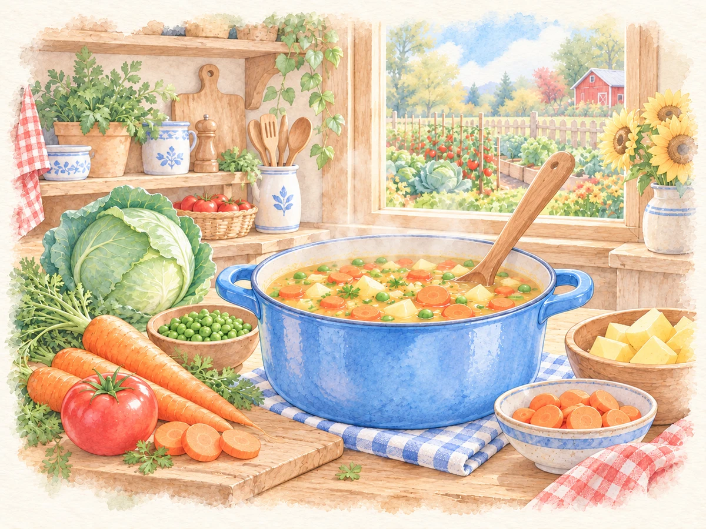

Little Play
Vegetable Soup
Count ingredients as you follow a recipe or create your own digital vegetable soup.
$1.99
Ways to use it
- Count pieces and compare them with a recipe.
- Follow a sequence of cooking actions.
How to play
- Choose Follow a Recipe or Make Your Own Soup.
- Select a level and up to six ingredients.
- Add ingredients, check your recipe and stir the soup.
Practical details
Teacher options include three levels and a show-numbers setting. Undo and Clear Pot support another try.
Explore together
Invite children to explain what they notice and talk through their choices.